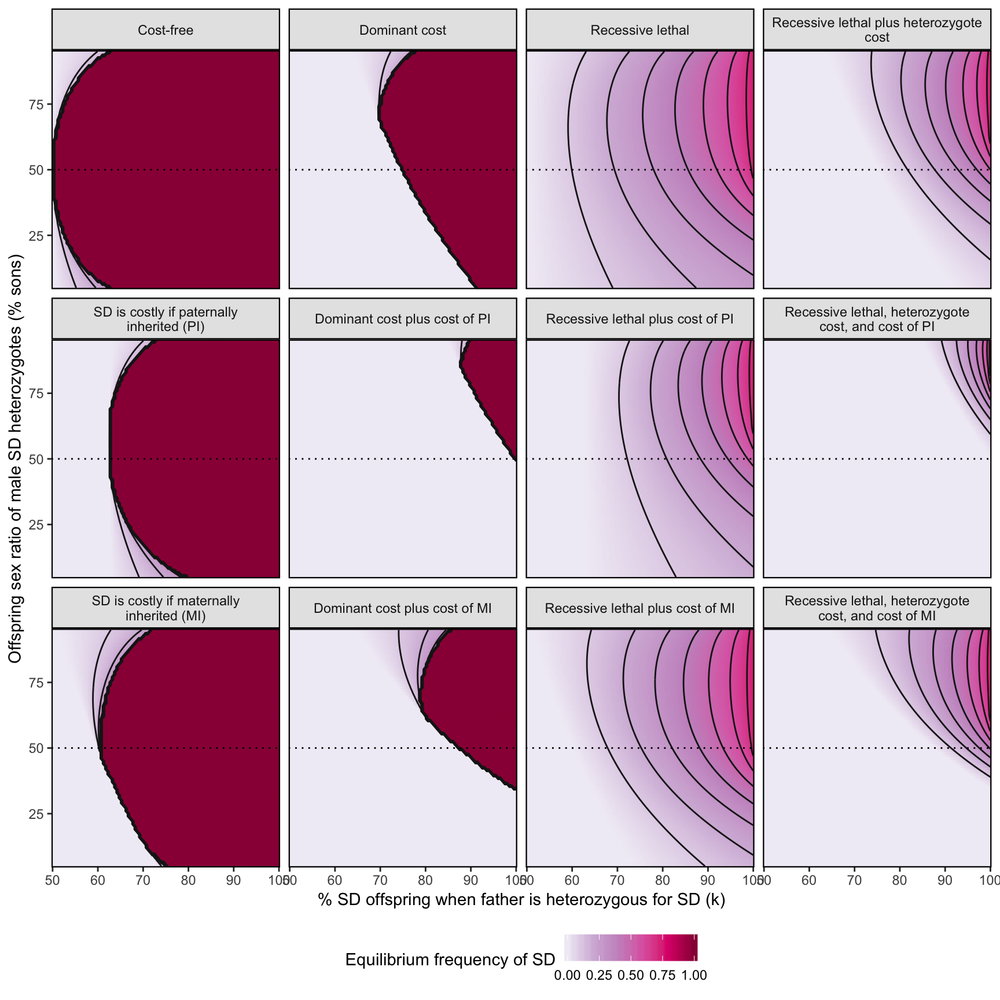

Last updated: 2019-03-12
Checks: 6 0
Knit directory: fitnessCostSD/
This reproducible R Markdown analysis was created with workflowr (version 1.2.0). The Report tab describes the reproducibility checks that were applied when the results were created. The Past versions tab lists the development history.
Great! Since the R Markdown file has been committed to the Git repository, you know the exact version of the code that produced these results.
Great job! The global environment was empty. Objects defined in the global environment can affect the analysis in your R Markdown file in unknown ways. For reproduciblity it’s best to always run the code in an empty environment.
The command set.seed(20190312) was run prior to running the code in the R Markdown file. Setting a seed ensures that any results that rely on randomness, e.g. subsampling or permutations, are reproducible.
Great job! Recording the operating system, R version, and package versions is critical for reproducibility.
Nice! There were no cached chunks for this analysis, so you can be confident that you successfully produced the results during this run.
Great! You are using Git for version control. Tracking code development and connecting the code version to the results is critical for reproducibility. The version displayed above was the version of the Git repository at the time these results were generated.
Note that you need to be careful to ensure that all relevant files for the analysis have been committed to Git prior to generating the results (you can use wflow_publish or wflow_git_commit). workflowr only checks the R Markdown file, but you know if there are other scripts or data files that it depends on. Below is the status of the Git repository when the results were generated:
Ignored files:
Ignored: .DS_Store
Ignored: .Rproj.user/
Ignored: data/.DS_Store
Ignored: docs/.DS_Store
Untracked files:
Untracked: data/SD_k tests_2018_04_05.xlsx
Untracked: data/clean_data/
Untracked: data/data collection sheet - follow up looking at sex ratio.xlsx
Untracked: data/data collection sheet from Heidi.xlsx
Untracked: data/messy_data/
Untracked: data/model_output/
Untracked: data/simulation_output.rds
Untracked: docs/figure/SD_costs_analysis.Rmd/
Untracked: docs/figure/evolutionary_simulation_SD.Rmd/
Untracked: figures/
Untracked: manuscript/
Unstaged changes:
Modified: README.md
Note that any generated files, e.g. HTML, png, CSS, etc., are not included in this status report because it is ok for generated content to have uncommitted changes.
These are the previous versions of the R Markdown and HTML files. If you’ve configured a remote Git repository (see ?wflow_git_remote), click on the hyperlinks in the table below to view them.
| File | Version | Author | Date | Message |
|---|---|---|---|---|
| Rmd | cceac7a | lukeholman | 2019-03-12 | Tweak |
| html | ba43211 | lukeholman | 2019-03-12 | Build site. |
| Rmd | 7c72cbc | lukeholman | 2019-03-12 | Tweak |
| html | 6b03f9c | lukeholman | 2019-03-12 | Build site. |
| Rmd | 2bc25a0 | lukeholman | 2019-03-12 | Added main pages |
library(purrr)
library(dplyr)
library(future)
library(future.apply)
library(kableExtra)
library(ggplot2)The “mating table” is list of all the possible mating types (e.g. wild-type mother with a SD-heterozygote father, etc etc), which lists the possible offspring genotypes and their associated frequencies. The precise values in the mating table are a function of \(k\) (i.e. the strength of segregation distortion) and the sex ratio bias in heterozygote males. We assume that the meiosis is Mendelian except in SD-heterozygote males, and that all cross except those with a SD-heterozygote father produce a 50:50 sex ratio.
make_mating_table <- function(k, mating_types, SR_bias_in_hetero_males){
offspring <- vector(mode = "list", nrow(mating_types))
make_offspring <- function(row, type, zygote_freq){
data.frame(mother = mating_types$mother[row],
father = mating_types$father[row],
type,
zygote_freq,
stringsAsFactors = FALSE)
}
g0 <- c("wild_type_female", "wild_type_male",
"hetero_female_maternal", "hetero_male_maternal")
g1 <- c("wild_type_female", "wild_type_male",
"hetero_female_paternal", "hetero_male_paternal")
g2 <- c("wild_type_female", "wild_type_male",
"hetero_female_maternal", "hetero_male_maternal",
"hetero_female_paternal", "hetero_male_paternal",
"homo_female", "homo_male")
g3 <- c("hetero_female_maternal", "hetero_male_maternal",
"homo_female", "homo_male")
g4 <- c("hetero_female_maternal", "hetero_male_maternal",
"homo_female", "homo_male")
p1 <- c(0.25*(1 - k)*(1 + SR_bias_in_hetero_males), 0.25*(1 - k)*(1 - SR_bias_in_hetero_males),
0.25*(1 + k)*(1 + SR_bias_in_hetero_males), 0.25*(1 + k)*(1 - SR_bias_in_hetero_males))
p2 <- c(0.125*(1 - k)*(1 + SR_bias_in_hetero_males), 0.125*(1 - k)*(1 - SR_bias_in_hetero_males),
0.125*(1 - k)*(1 + SR_bias_in_hetero_males), 0.125*(1 - k)*(1 - SR_bias_in_hetero_males),
0.125*(1 + k)*(1 + SR_bias_in_hetero_males), 0.125*(1 + k)*(1 - SR_bias_in_hetero_males),
0.125*(1 + k)*(1 + SR_bias_in_hetero_males), 0.125*(1 + k)*(1 - SR_bias_in_hetero_males))
rep25 <- rep(0.25, 4)
rep5 <- rep(0.5, 2)
offspring[[1]] <- make_offspring(1, c("wild_type_female", "wild_type_male"), rep5)
offspring[[2]] <- make_offspring(2, g0, rep25)
offspring[[3]] <- make_offspring(3, g0, rep25)
offspring[[4]] <- make_offspring(4, c("hetero_female_maternal", "hetero_male_maternal"), rep5)
offspring[[5]] <- make_offspring(5, g1, p1)
offspring[[6]] <- make_offspring(6, g2, p2)
offspring[[7]] <- make_offspring(7, g2, p2)
offspring[[8]] <- make_offspring(8, g3, p1)
offspring[[9]] <- make_offspring(9, g1, p1)
offspring[[10]] <- make_offspring(10, g2, p2)
offspring[[11]] <- make_offspring(11, g2, p2)
offspring[[12]] <- make_offspring(12, g3, p1)
offspring[[13]] <- make_offspring(13, c("hetero_female_paternal", "hetero_male_paternal"), rep5)
offspring[[14]] <- make_offspring(14, g4, rep25)
offspring[[15]] <- make_offspring(15, g4, rep25)
offspring[[16]] <- make_offspring(16, c("homo_female", "homo_male"), rep5)
output <- do.call("rbind", offspring)
names(offspring) <- paste(mating_types[,1], mating_types[,2], sep = " x ")
# print(offspring)
output
}An example of the output of make_mating_table(), under the assumptions that there is strong but incomplete segregation distortion, and that male SD heterozygotes produce a somewhat female-biased sex ratio.
mating_types <- expand.grid(mother = c("wild_type_female",
"hetero_female_maternal",
"hetero_female_paternal",
"homo_female"),
father = c("wild_type_male",
"hetero_male_maternal",
"hetero_male_paternal",
"homo_male"),
stringsAsFactors = FALSE)
make_mating_table(
k = 0.9,
mating_types,
SR_bias_in_hetero_males = 0.4) %>%
kable() %>%
kable_styling() %>%
scroll_box(height = "500px")| mother | father | type | zygote_freq |
|---|---|---|---|
| wild_type_female | wild_type_male | wild_type_female | 0.5000 |
| wild_type_female | wild_type_male | wild_type_male | 0.5000 |
| hetero_female_maternal | wild_type_male | wild_type_female | 0.2500 |
| hetero_female_maternal | wild_type_male | wild_type_male | 0.2500 |
| hetero_female_maternal | wild_type_male | hetero_female_maternal | 0.2500 |
| hetero_female_maternal | wild_type_male | hetero_male_maternal | 0.2500 |
| hetero_female_paternal | wild_type_male | wild_type_female | 0.2500 |
| hetero_female_paternal | wild_type_male | wild_type_male | 0.2500 |
| hetero_female_paternal | wild_type_male | hetero_female_maternal | 0.2500 |
| hetero_female_paternal | wild_type_male | hetero_male_maternal | 0.2500 |
| homo_female | wild_type_male | hetero_female_maternal | 0.5000 |
| homo_female | wild_type_male | hetero_male_maternal | 0.5000 |
| wild_type_female | hetero_male_maternal | wild_type_female | 0.0350 |
| wild_type_female | hetero_male_maternal | wild_type_male | 0.0150 |
| wild_type_female | hetero_male_maternal | hetero_female_paternal | 0.6650 |
| wild_type_female | hetero_male_maternal | hetero_male_paternal | 0.2850 |
| hetero_female_maternal | hetero_male_maternal | wild_type_female | 0.0175 |
| hetero_female_maternal | hetero_male_maternal | wild_type_male | 0.0075 |
| hetero_female_maternal | hetero_male_maternal | hetero_female_maternal | 0.0175 |
| hetero_female_maternal | hetero_male_maternal | hetero_male_maternal | 0.0075 |
| hetero_female_maternal | hetero_male_maternal | hetero_female_paternal | 0.3325 |
| hetero_female_maternal | hetero_male_maternal | hetero_male_paternal | 0.1425 |
| hetero_female_maternal | hetero_male_maternal | homo_female | 0.3325 |
| hetero_female_maternal | hetero_male_maternal | homo_male | 0.1425 |
| hetero_female_paternal | hetero_male_maternal | wild_type_female | 0.0175 |
| hetero_female_paternal | hetero_male_maternal | wild_type_male | 0.0075 |
| hetero_female_paternal | hetero_male_maternal | hetero_female_maternal | 0.0175 |
| hetero_female_paternal | hetero_male_maternal | hetero_male_maternal | 0.0075 |
| hetero_female_paternal | hetero_male_maternal | hetero_female_paternal | 0.3325 |
| hetero_female_paternal | hetero_male_maternal | hetero_male_paternal | 0.1425 |
| hetero_female_paternal | hetero_male_maternal | homo_female | 0.3325 |
| hetero_female_paternal | hetero_male_maternal | homo_male | 0.1425 |
| homo_female | hetero_male_maternal | hetero_female_maternal | 0.0350 |
| homo_female | hetero_male_maternal | hetero_male_maternal | 0.0150 |
| homo_female | hetero_male_maternal | homo_female | 0.6650 |
| homo_female | hetero_male_maternal | homo_male | 0.2850 |
| wild_type_female | hetero_male_paternal | wild_type_female | 0.0350 |
| wild_type_female | hetero_male_paternal | wild_type_male | 0.0150 |
| wild_type_female | hetero_male_paternal | hetero_female_paternal | 0.6650 |
| wild_type_female | hetero_male_paternal | hetero_male_paternal | 0.2850 |
| hetero_female_maternal | hetero_male_paternal | wild_type_female | 0.0175 |
| hetero_female_maternal | hetero_male_paternal | wild_type_male | 0.0075 |
| hetero_female_maternal | hetero_male_paternal | hetero_female_maternal | 0.0175 |
| hetero_female_maternal | hetero_male_paternal | hetero_male_maternal | 0.0075 |
| hetero_female_maternal | hetero_male_paternal | hetero_female_paternal | 0.3325 |
| hetero_female_maternal | hetero_male_paternal | hetero_male_paternal | 0.1425 |
| hetero_female_maternal | hetero_male_paternal | homo_female | 0.3325 |
| hetero_female_maternal | hetero_male_paternal | homo_male | 0.1425 |
| hetero_female_paternal | hetero_male_paternal | wild_type_female | 0.0175 |
| hetero_female_paternal | hetero_male_paternal | wild_type_male | 0.0075 |
| hetero_female_paternal | hetero_male_paternal | hetero_female_maternal | 0.0175 |
| hetero_female_paternal | hetero_male_paternal | hetero_male_maternal | 0.0075 |
| hetero_female_paternal | hetero_male_paternal | hetero_female_paternal | 0.3325 |
| hetero_female_paternal | hetero_male_paternal | hetero_male_paternal | 0.1425 |
| hetero_female_paternal | hetero_male_paternal | homo_female | 0.3325 |
| hetero_female_paternal | hetero_male_paternal | homo_male | 0.1425 |
| homo_female | hetero_male_paternal | hetero_female_maternal | 0.0350 |
| homo_female | hetero_male_paternal | hetero_male_maternal | 0.0150 |
| homo_female | hetero_male_paternal | homo_female | 0.6650 |
| homo_female | hetero_male_paternal | homo_male | 0.2850 |
| wild_type_female | homo_male | hetero_female_paternal | 0.5000 |
| wild_type_female | homo_male | hetero_male_paternal | 0.5000 |
| hetero_female_maternal | homo_male | hetero_female_maternal | 0.2500 |
| hetero_female_maternal | homo_male | hetero_male_maternal | 0.2500 |
| hetero_female_maternal | homo_male | homo_female | 0.2500 |
| hetero_female_maternal | homo_male | homo_male | 0.2500 |
| hetero_female_paternal | homo_male | hetero_female_maternal | 0.2500 |
| hetero_female_paternal | homo_male | hetero_male_maternal | 0.2500 |
| hetero_female_paternal | homo_male | homo_female | 0.2500 |
| hetero_female_paternal | homo_male | homo_male | 0.2500 |
| homo_female | homo_male | homo_female | 0.5000 |
| homo_female | homo_male | homo_male | 0.5000 |
Given a set of genotype frequencies, it is simple to calculate the frequencies of each mating type. First, we implement selection, such that each genotype is represented in the mating types according to the product of its frequency and its fitness. Second, we determine the frequency of cross between male genotype \(i\) and female genotype \(j\) as \(i\times j\).
find_mating_type_frequencies <- function(pop, mating_types){
# Implement selection
pop$prop <- pop$prop * pop$fitness
pop$prop <- pop$prop / sum(pop$prop)
# Mating type freq is f_1 * f_2, post selection
mating_types %>%
mutate(mating_freq = pop$prop[match(mating_types$mother, pop$type)] * pop$prop[match(mating_types$father, pop$type)])
}This function iterates over generations, implementing selection and reproduction each time, until either A) the SD allele fixes, B) the SD allele goes extinct, or C) the generation timer expires.
# Helper function to calculate the frequency of the SD allele
calc_prop_SD <- function(pop){
(sum(pop$prop[1:4]) + 2 * sum(pop$prop[5:6])) / 2
}
run_simulation <- function(generations,
k,
w_hetero_female_maternal,
w_hetero_female_paternal,
w_hetero_male_maternal,
w_hetero_male_paternal,
w_homo_male,
w_homo_female,
SR_bias_in_hetero_males,
initial_freq_SD,
mating_types){
# Make the initial population
pop <- data.frame(
type = c("wild_type_female",
"wild_type_male",
"hetero_female_maternal",
"hetero_male_maternal",
"hetero_female_paternal",
"hetero_male_paternal",
"homo_female",
"homo_male"),
prop = c(rep(0.5 * (1 - initial_freq_SD)^2, 2),
rep(0.25 * (1 - initial_freq_SD) * initial_freq_SD, 2),
rep(0.25 * (1 - initial_freq_SD) * initial_freq_SD, 2),
rep(0.5 * initial_freq_SD^2, 2)),
fitness = c(1, 1, w_hetero_female_maternal,
w_hetero_female_paternal,
w_hetero_male_maternal,
w_hetero_male_paternal,
w_homo_male,
w_homo_female),
stringsAsFactors = FALSE) %>%
arrange(type)
# Make the mating table used for this simulation run
mating_table <- make_mating_table(k, mating_types, SR_bias_in_hetero_males)
# Iterate over generations
for(i in 1:generations){
# Find the mating type frequencies, find the offspring frequencies, and renormalise the frequencies to sum to one
prop_col <- mating_table %>%
left_join(find_mating_type_frequencies(pop, mating_types),
by = c("mother", "father")) %>%
mutate(offspring_freq = mating_freq * zygote_freq) %>%
group_by(type) %>%
summarise(prop = sum(offspring_freq)) %>%
mutate(prop = prop / sum(prop)) %>%
pull(prop)
# Calculate the frequency of SD.
# Quit early if SD fixed/extinct-ish
prop_SD <- calc_prop_SD(pop %>% mutate(prop = prop_col))
# if(is.na(prop_SD)) print(pop) # FOR DEBUGGING
pop <- pop %>% mutate(prop = prop_col)
if(prop_SD > 0.99) return(pop)
if(prop_SD < 0.0001) return(pop)
# offspring <- mating_table %>%
# left_join(find_mating_type_frequencies(pop, mating_types),
# by = c("mother", "father")) %>%
# mutate(offspring_freq = mating_freq * zygote_freq)
#
# pop$prop <-
# c(sum(offspring$offspring_freq[offspring$type == "wild_type_female"]),
# sum(offspring$offspring_freq[offspring$type == "wild_type_male"]),
# sum(offspring$offspring_freq[offspring$type == "hetero_female_maternal"]),
# sum(offspring$offspring_freq[offspring$type == "hetero_male_maternal"]),
# sum(offspring$offspring_freq[offspring$type == "hetero_female_paternal"]),
# sum(offspring$offspring_freq[offspring$type == "hetero_male_paternal"]),
# sum(offspring$offspring_freq[offspring$type == "homo_female"]),
# sum(offspring$offspring_freq[offspring$type == "homo_male"]))
#
# pop$prop[is.na(pop$prop)] <- 0
# pop$prop <- pop$prop / sum(pop$prop)
# print(pop %>% mutate(prop = round(prop, 2)))
}
pop
}A helper function that runs run_simulation() on a data frame of parameter values.
run_many_simulations <- function(parameters){
mating_types <- expand.grid(mother = c("wild_type_female",
"hetero_female_maternal",
"hetero_female_paternal",
"homo_female"),
father = c("wild_type_male",
"hetero_male_maternal",
"hetero_male_paternal",
"homo_male"),
stringsAsFactors = FALSE)
# Carefully pass all the parameters to run_simulation()
run_one_simulation <- function(row, parameters, mating_types){
genotypes <- run_simulation(
generations = parameters$generations[row],
k = parameters$k[row],
w_hetero_female_maternal = parameters$w_hetero_female_maternal[row],
w_hetero_female_paternal = parameters$w_hetero_female_paternal[row],
w_hetero_male_maternal = parameters$w_hetero_male_maternal[row],
w_hetero_male_paternal = parameters$w_hetero_male_paternal[row],
w_homo_male = parameters$w_homo_male[row],
w_homo_female = parameters$w_homo_female[row],
SR_bias_in_hetero_males = parameters$SR_bias_in_hetero_males[row],
initial_freq_SD = parameters$initial_freq_SD[row],
mating_types = mating_types
)
output <- data.frame(parameters[row, ]) %>% as_tibble()
output$genotypes <- list(genotypes %>% select(-fitness))
output
}
# Loop over all the different parameter spaces
lapply(1:nrow(parameters), run_one_simulation, parameters = parameters, mating_types = mating_types) %>%
do.call("rbind", .) %>%
mutate(prop_SD = map_dbl(genotypes, calc_prop_SD))
}Used to define the parameter spaces that are plotted in the figure of the results.
imprint_cost <- 0.2
resolution <- 101
resolution_y <- 91
gen <- 10000
parameters <- rbind(
expand.grid(
generations = gen,
k = seq(0, 1, length = resolution),
w_hetero_female_maternal = 1,
w_hetero_female_paternal = 1,
w_hetero_male_maternal = 1,
w_hetero_male_paternal = 1,
w_homo_male = 1,
w_homo_female = 1,
facet = "Cost free",
SR_bias_in_hetero_males = seq(-0.9, 0.9, length = resolution_y),
initial_freq_SD = 0.01
),
expand.grid(
generations = gen,
k = seq(0, 1, length = resolution),
w_hetero_female_maternal = .8,
w_hetero_female_paternal = .8,
w_hetero_male_maternal = .8,
w_hetero_male_paternal = .8,
w_homo_male = .8,
w_homo_female = .8,
facet = "Dominant cost",
SR_bias_in_hetero_males = seq(-0.9, 0.9, length = resolution_y),
initial_freq_SD = 0.01
),
expand.grid(
generations = gen,
k = seq(0, 1, length = resolution),
w_hetero_female_maternal = 1,
w_hetero_female_paternal = 1,
w_hetero_male_maternal = 1,
w_hetero_male_paternal = 1,
w_homo_male = 0,
w_homo_female = 0,
facet = "Recessive lethal",
SR_bias_in_hetero_males = seq(-0.9, 0.9, length = resolution_y),
initial_freq_SD = 0.01
),
expand.grid(
generations = gen,
k = seq(0, 1, length = resolution),
w_hetero_female_maternal = .8,
w_hetero_female_paternal = .8,
w_hetero_male_maternal = .8,
w_hetero_male_paternal = .8,
w_homo_male = 0,
w_homo_female = 0,
facet = "Recessive lethal plus heterozygote cost",
SR_bias_in_hetero_males = seq(-0.9, 0.9, length = resolution_y),
initial_freq_SD = 0.01
),
expand.grid(
generations = gen,
k = seq(0, 1, length = resolution),
w_hetero_female_maternal = 1,
w_hetero_female_paternal = 1 - imprint_cost,
w_hetero_male_maternal = 1,
w_hetero_male_paternal = 1 - imprint_cost,
w_homo_male = 1 - imprint_cost,
w_homo_female = 1 - imprint_cost,
facet = "Cost of paternal inheritance (PI)",
SR_bias_in_hetero_males = seq(-0.9, 0.9, length = resolution_y),
initial_freq_SD = 0.01
),
expand.grid(
generations = gen,
k = seq(0, 1, length = resolution),
w_hetero_female_maternal = .8,
w_hetero_female_paternal = .8 - imprint_cost,
w_hetero_male_maternal = .8,
w_hetero_male_paternal = .8 - imprint_cost,
w_homo_male = .8 - imprint_cost,
w_homo_female = .8 - imprint_cost,
facet = "Dominant cost plus cost of PI",
SR_bias_in_hetero_males = seq(-0.9, 0.9, length = resolution_y),
initial_freq_SD = 0.01
),
expand.grid(
generations = gen,
k = seq(0, 1, length = resolution),
w_hetero_female_maternal = 1,
w_hetero_female_paternal = 1 - imprint_cost,
w_hetero_male_maternal = 1,
w_hetero_male_paternal = 1 - imprint_cost,
w_homo_male = 0,
w_homo_female = 0,
facet = "Recessive lethal plus cost of PI",
SR_bias_in_hetero_males = seq(-0.9, 0.9, length = resolution_y),
initial_freq_SD = 0.01
),
expand.grid(
generations = gen,
k = seq(0, 1, length = resolution),
w_hetero_female_maternal = .8,
w_hetero_female_paternal = .8 - imprint_cost,
w_hetero_male_maternal = .8,
w_hetero_male_paternal = .8 - imprint_cost,
w_homo_male = 0,
w_homo_female = 0,
facet = "Recessive lethal, heterozygote cost, and cost of PI",
SR_bias_in_hetero_males = seq(-0.9, 0.9, length = resolution_y),
initial_freq_SD = 0.01
),
expand.grid(
generations = gen,
k = seq(0, 1, length = resolution),
w_hetero_female_maternal = 1 - imprint_cost,
w_hetero_female_paternal = 1,
w_hetero_male_maternal = 1 - imprint_cost,
w_hetero_male_paternal = 1,
w_homo_male = 1 - imprint_cost,
w_homo_female = 1 - imprint_cost,
facet = "Cost of maternal inheritance (MI)",
SR_bias_in_hetero_males = seq(-0.9, 0.9, length = resolution_y),
initial_freq_SD = 0.01
),
expand.grid(
generations = gen,
k = seq(0, 1, length = resolution),
w_hetero_female_maternal = .8 - imprint_cost,
w_hetero_female_paternal = .8,
w_hetero_male_maternal = .8 - imprint_cost,
w_hetero_male_paternal = .8,
w_homo_male = .8 - imprint_cost,
w_homo_female = .8 - imprint_cost,
facet = "Dominant cost plus cost of MI",
SR_bias_in_hetero_males = seq(-0.9, 0.9, length = resolution_y),
initial_freq_SD = 0.01
),
expand.grid(
generations = gen,
k = seq(0, 1, length = resolution),
w_hetero_female_maternal = 1 - imprint_cost,
w_hetero_female_paternal = 1,
w_hetero_male_maternal = 1 - imprint_cost,
w_hetero_male_paternal = 1,
w_homo_male = 0,
w_homo_female = 0,
facet = "Recessive lethal plus cost of MI",
SR_bias_in_hetero_males = seq(-0.9, 0.9, length = resolution_y),
initial_freq_SD = 0.01
),
expand.grid(
generations = gen,
k = seq(0, 1, length = resolution),
w_hetero_female_maternal = .8 - imprint_cost,
w_hetero_female_paternal = .8,
w_hetero_male_maternal = .8 - imprint_cost,
w_hetero_male_paternal = .8,
w_homo_male = 0,
w_homo_female = 0,
facet = "Recessive lethal, heterozygote cost, and cost of MI",
SR_bias_in_hetero_males = seq(-0.9, 0.9, length = resolution_y),
initial_freq_SD = 0.01
)
) %>% as_tibble()if(!file.exists("data/simulation_output.rds")){
cores <- 7
# Divide the job into 100 equal-ish chunks so that we can see the % completion as it proceeds
split_parameters <- split(parameters, sample(1:100, nrow(parameters), replace = TRUE))
for(i in 1:length(split_parameters)){
print(i)
plan("multicore")
chunk_size <- floor(nrow(split_parameters[[i]]) / cores)
simulation_output <- split(split_parameters[[i]], c(rep(1:(cores-1), each = chunk_size),
rep(cores, nrow(split_parameters[[i]]) - chunk_size*(cores-1)))) %>%
future_lapply(run_many_simulations) %>% do.call("rbind", .)
saveRDS(simulation_output, paste("data/simulation_output_", i, ".rds", sep = ""))
}
simulation_output <- list.files(path = "data", pattern = "simulation_output_", full.names = TRUE) %>%
lapply(readRDS) %>% do.call("rbind", .)
saveRDS(simulation_output, "data/simulation_output.rds")
} else {
simulation_output <- readRDS("data/simulation_output.rds")
if(nrow(simulation_output) != nrow(parameters)){
pasted_done <- apply(simulation_output[, names(simulation_output) %in% names(parameters)], 1, paste0, collapse = "_")
pasted_to_do <- apply(parameters, 1, paste0, collapse = "_")
trimmed_parameters <- parameters[!(pasted_to_do %in% pasted_done), ]
cores <- 7
# Divide the job into 100 equal-ish chunks so that we can see the % completion as it proceeds
split_parameters <- split(trimmed_parameters, sample(1:10, nrow(parameters), replace = TRUE))
for(i in 1:length(split_parameters)){
print(i)
plan("multicore")
chunk_size <- floor(nrow(split_parameters[[i]]) / cores)
simulation_output <- split(split_parameters[[i]], c(rep(1:(cores-1), each = chunk_size),
rep(cores, nrow(split_parameters[[i]]) - chunk_size*(cores-1)))) %>%
future_lapply(run_many_simulations) %>% do.call("rbind", .)
saveRDS(simulation_output, paste("data/simulation_output_surplus_", i, ".rds", sep = ""))
}
simulation_output <- list.files(path = "data", pattern = "simulation_output_", full.names = TRUE) %>%
lapply(readRDS) %>% do.call("rbind", .)
saveRDS(simulation_output, "data/simulation_output.rds")
}
}
# delete individual files
# unlink(list.files(path = "data", pattern = "simulation_output_", full.names = TRUE))fig_3 <- simulation_output %>%
ggplot(aes(k, SR_bias_in_hetero_males, fill = prop_SD)) +
geom_blank() +
geom_raster() +
stat_contour(aes(z = prop_SD), colour = "grey10") +
geom_hline(yintercept = 0, colour = "black", linetype = 3) +
labs(x = "Strength of segregation distortion (K)",
y = "Sex ratio bias in SD heterozygotes\n(postive means more daughters, negative means more sons)") +
facet_wrap(~ facet, labeller = labeller(facet = label_wrap_gen(35))) +
scale_fill_distiller(palette = "YlGnBu", direction = 1, name = expression(paste("", hat(paste("p")), " (SD)")), limits = c(0,1)) +
scale_x_continuous(expand = c(0, 0), labels = c(0, 0.25, 0.5, 0.75, 1)) + scale_y_continuous(expand = c(0, 0)) +
theme(panel.border = element_rect(fill = NA, colour = "black", size = .8),
strip.background = element_rect(colour = "black", fill = "grey90", size = .8),
legend.position = "bottom")
ggsave(fig_3, filename = "figures/fig3.pdf", height = 9, width = 9)
fig_3
| Version | Author | Date |
|---|---|---|
| 6b03f9c | lukeholman | 2019-03-12 |
sessionInfo()R version 3.5.1 (2018-07-02)
Platform: x86_64-apple-darwin15.6.0 (64-bit)
Running under: macOS High Sierra 10.13.6
Matrix products: default
BLAS: /Library/Frameworks/R.framework/Versions/3.5/Resources/lib/libRblas.0.dylib
LAPACK: /Library/Frameworks/R.framework/Versions/3.5/Resources/lib/libRlapack.dylib
locale:
[1] en_AU.UTF-8/en_AU.UTF-8/en_AU.UTF-8/C/en_AU.UTF-8/en_AU.UTF-8
attached base packages:
[1] stats graphics grDevices utils datasets methods base
other attached packages:
[1] ggplot2_3.1.0 kableExtra_0.9.0 future.apply_1.0.1
[4] future_1.11.1.1 dplyr_0.8.0.1 purrr_0.3.1
loaded via a namespace (and not attached):
[1] Rcpp_1.0.0 RColorBrewer_1.1-2 highr_0.7
[4] plyr_1.8.4 pillar_1.3.1.9000 compiler_3.5.1
[7] git2r_0.23.0 workflowr_1.2.0 tools_3.5.1
[10] digest_0.6.18 gtable_0.2.0 viridisLite_0.3.0
[13] evaluate_0.11 tibble_2.0.99.9000 pkgconfig_2.0.2
[16] rlang_0.3.1 rstudioapi_0.9.0 yaml_2.2.0
[19] parallel_3.5.1 withr_2.1.2 stringr_1.3.1
[22] httr_1.3.1 knitr_1.20 xml2_1.2.0
[25] fs_1.2.6 globals_0.12.4 hms_0.4.2
[28] grid_3.5.1 rprojroot_1.3-2 tidyselect_0.2.5
[31] glue_1.3.0.9000 listenv_0.7.0 R6_2.4.0
[34] rmarkdown_1.10 readr_1.1.1 magrittr_1.5
[37] whisker_0.3-2 backports_1.1.2 scales_1.0.0
[40] codetools_0.2-15 htmltools_0.3.6 assertthat_0.2.0
[43] rvest_0.3.2 colorspace_1.3-2 labeling_0.3
[46] stringi_1.3.1 lazyeval_0.2.1 munsell_0.5.0
[49] crayon_1.3.4